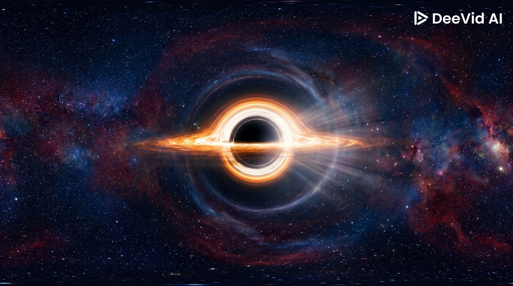

▲
◀
▼
▶
SALTO
★ NIVEL FINAL ★
ESTACIÓN ORBITAL
Agente
: Plataformas pequeñas
y algunas en movimiento. ¡Máxima concentración!
INICIAR NIVEL FINAL
⬅ VOLVER AL PORTAL
ID:
---
NIVEL:
3 - FINAL
PTS:
0
❤️❤️❤️
TERMINADO
REINTENTAR NIVEL FINAL
⬅ IR AL INICIO
